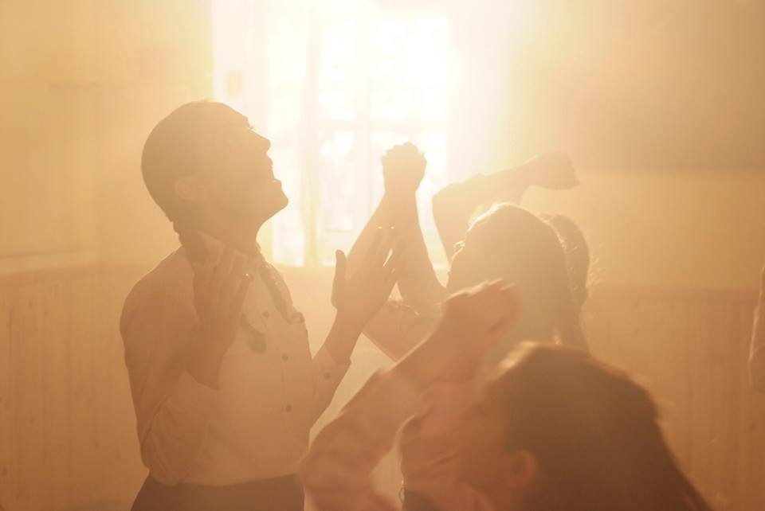
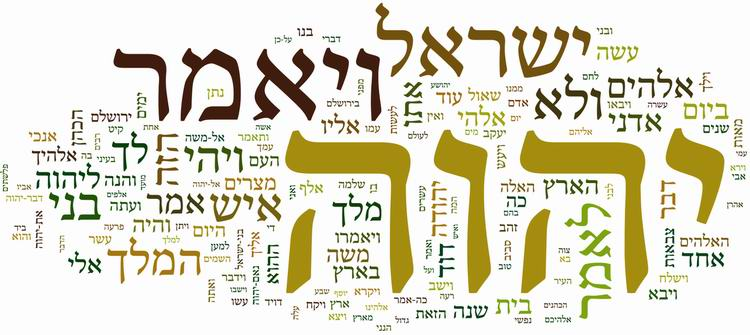
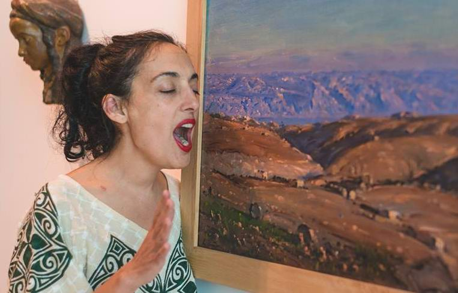
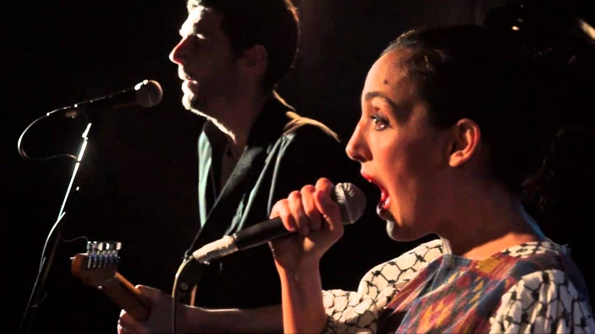

Treasures of Hebrew Words by Victoria Hanna
Victoria Hanna believes that with every word we speak we create something, and that a space filled with singing is like a painted canvas. The word "singer" cannot contain her use of the vocal range and her handling of sound when it comes to the performance she calls "The Voice of the Word".
Source: habama.co.il (translated from Hebrew by Ephraim Kalish)
Victoria Hanna is an omanit kol (Hebrew: sound artist). This definition was given to her by the theatre figure Dudi Maayan, and it probably expresses exactly the essence of a creative work that explores sounds and words.

"'The Voice of the Word' is a phrase from the revelations of the sages Rabbi Shimon bar Yochai and his disciples. Victoria sings this text in Aramaic. It says that in fact we are all asleep. But there is no time to waste: every night we must wait for the light that comes in the morning, to turn bitter into sweet and darkness into light, and to wake at last from the sleep in which we are sunk. We people who inhabit this world are half asleep."
"All the texts on which Hanna's work is based come from ancient Jewish sources. There are other texts too: the 'Sefer Yetzirah' (Book of Creation), the 'Song of Love for the Torah' written by Rabbi Shimon bar Yochai, texts from the Song of Songs, the prayer for rain, which is in fact based on rituals sounded while repeating the Hebrew alphabet. There is a prayer said after a person leaves the toilet. It is a wonderful prayer of thanks to God for how marvellously He made the human body and provided everything in it perfectly, so that it is able to function."

Hanna's connection with ancient Hebrew texts, the writings of the rabbis and prayers is understandable. She grew up in Jerusalem, in a religious environment, immersed in these texts and writings from infancy. Her father, a Sephardi rabbi, filled his house with books. And the books in that house are alive: they are constantly taken down to be read, studied, to breathe in their smell, to be spoken aloud. And the aim is to speak these texts and so to create through speaking. "When I go up on stage and sing, all that power is still present in me," says Hanna. She is constantly in dialogue with such texts.
The question almost inevitably arises: how does a woman brought up in an Orthodox Jewish environment become a singer? (As is well known, in Orthodox circles this is completely unacceptable.)

"The religious world is closed. A woman there really does have a different place from a man as regards self-expression. When a man leads the prayer, the women behind him say their prayer in a whisper or only move their lips without a sound. This power I grew up with, when only the lips move without making a sound, gave me a special experience of something physical that is clearly present."

"If I try to find another parallel, it is like being in a public place without a guitar, but moving your fingers as though you were playing, and something happens to you, almost on a physical level, in your fingers, as if you were playing. It is something that cannot happen while you are really playing the guitar. And then, when you really go back to playing the guitar, you have a special connection with it. Do you know that feeling?"
"The same thing happens when you only move your lips without making a sound. You connect with the source, with what happens in the mouth when the sound has not yet been born. And it is an amazing power that lets me connect with words in a different way. Often, when there is some prohibition and something is held inside, it builds up great power (like a spring being compressed). And when it does break out, it comes out differently from when there are no such restrictions.
And sometimes singing comes out of me that depends on nothing. It simply flows out of me, and something happens that happens before the word comes out. I am very interested in exploring what makes my voice break out, begin to sound when it MUST come out, and not when I am sitting calmly and singing. Like an S.O.S.! It is terribly interesting for me to explore this state.
I explore the physical power of sound and word. I treat my voice as something I see coming out, as something very physical.
I try to find the connection between painting and sound. I treat the space in which a person sings as a canvas or a sheet of paper. The body is like a pen, and the voice like the ink with which we draw in the air.
The text of Rabbi Avraham Abulafia, who lived in Spain in the 13th century, is interesting. He devoted his whole life to the action of letters and their combinations. And he wrote amazing things that give a great deal of inspiration. He compares ink with the process of writing, with the process of human creativity. I think in the same way, in every word you speak, you create something.
After all, the world too was created by the spoken word of the Most High. And it was so. Today we go to a concert to listen to music. But in ancient times the voice of poetry and the word was meant not so much for people to come and listen to music, as for their healing, SO THAT SOMETHING WOULD HAPPEN IN THEIR LIVES, or to ask God for something. The use of sound came from the desire to produce, to create something."
 The Exodus from Egypt as Seen by James Tissot
The Exodus from Egypt as Seen by James Tissot Purim-shpil. Exposing Evil…
Purim-shpil. Exposing Evil… The Passover Haggadah. A Historical Note
The Passover Haggadah. A Historical Note